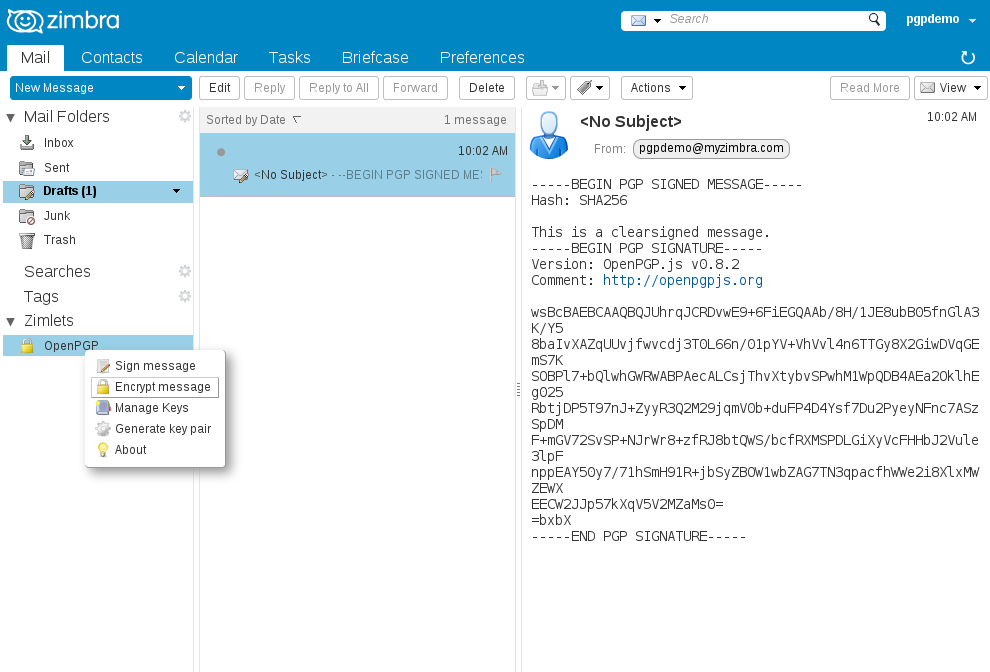
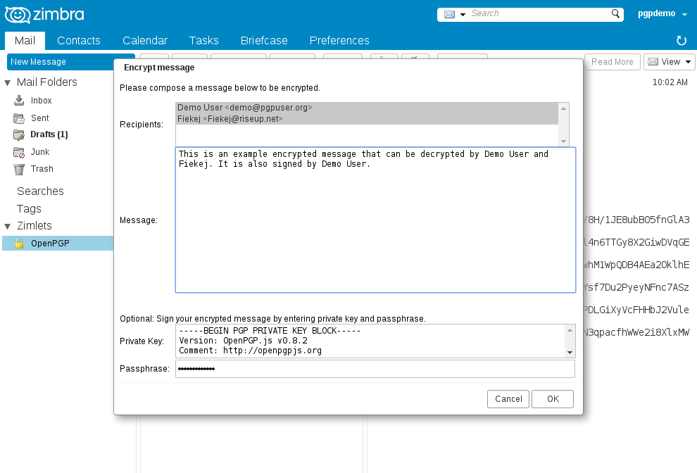
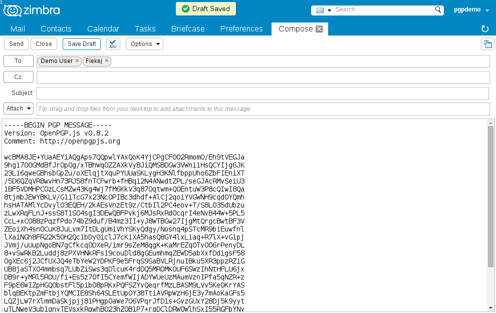
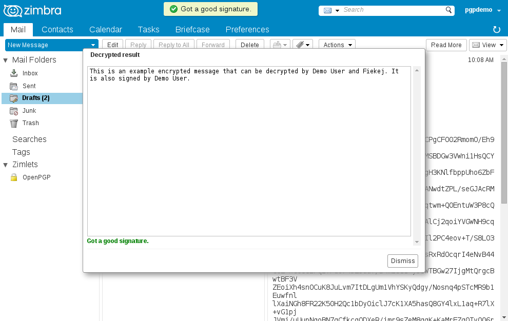

OpenPGP Zimlet User Help
Contents
- Why Use PGP?
- Generating a new key pair
- Clear signing a message
- Adding Public Keys
- Encrypting a message
- About OpenPGP Zimlet
Why Use PGP?
PGP stands for "Pretty Good Privacy," and it's most often used for two things:- Privacy:
Prevent people other than the intended recipients from reading an email message. - Authenticity:
Ensure a message was send by the person you think it was and no one else altered the email message.
OpenPGP Zimlet
Find the OpenPGP menu under Zimlets in your Zimbra web mail. Right click on OpenPGP and select "Manage keys".

New users should see that there are no keys stored in the "Manage keys" window. If you are new to PGP you can now click the Cancel button to go to the next step.

Generating a new key pair
Right click on OpenPGP and then click "Generate key pair".
In the "Generate new key pair" window check if all the fields are correctly filled by the server. Correct when necessary. See the table below:
| User ID | example: Firstname Lastname <myemail@example.com> Please follow this example, so people can automatically find your email address when using your public key. |
| Passphrase |
|
| Key Length |
Longer is better and also slower. The following list is ordered by best browser PGP performance and a Key Length recommendation for every day use:
|
| Store and overwrite | Recommended for new users, automatically set the generated keys to the "Manage keys" window. |
When you are done, click OK and wait for your browser to generate your keys.

Copy and paste the result and store it in a safe place. When you are done, click OK.

Now go back to the "Manage keys" window. You should see your keys and passphrase there now. Click OK.

Clear signing a message
Right click on OpenPGP and click "Sign message".
Enter your Private Key and Passphrase if needed and compose your message. Click OK when you are done.

You will now see the Zimbra compose window with your signed message. Enter a subject and select recipients like a normal mail and click Save Draft and Close when you are done.

Go to your Drafts folder and click the mail you just created. There should be a message saying "Got a good signature.", you can now open and send your mail.

Adding Public Keys
Before you can encrypt messages or verify signatures you must copy-paste Public Keys of the people you wish to communicate with to the "Manage keys" window. This example adds Public Key 2. Click OK when you are done.
Encrypting a message
Right click on OpenPGP and then click "Encrypt message".
In the "Encrypt message" window:
- Select one or more recipients using (CTRL+click). You may wish to select yourself so you can read the message afterwards
- Compose the message

You will now see the Zimbra compose window with your encrypted message. Enter a subject and verify the recipients like a normal mail and click Save Draft and Close when you are done.

Go to your Drafts folder and click the mail you just created. There should be a message saying "Got a good signature.", in case you selected yourself as one of the recipients you should now also see your message text. Click Dismiss, then open and send your mail.

Zimbra OpenPGP Zimlet
If you find Zimbra OpenPGP Zimlet useful and want to support its continued development, you can make a donation. Please report bugs on Github.Credits
- Michael Graziano enhancements
- Truong Anh Tuan enhancements
- Marius Savelbergh funds
- Klaus Belser funds
- Hivos.org funds
- OpenPGP.js
- and others.
This program is free software: you can redistribute it and/or modify
it under the terms of the GNU General Public License as published by
the Free Software Foundation, either version 3 of the License, or
(at your option) any later version.
This program is distributed in the hope that it will be useful,
but WITHOUT ANY WARRANTY; without even the implied warranty of
MERCHANTABILITY or FITNESS FOR A PARTICULAR PURPOSE. See the
GNU General Public License for more details.
You should have received a copy of the GNU General Public License
along with this program. If not, see http://www.gnu.org/licenses/.